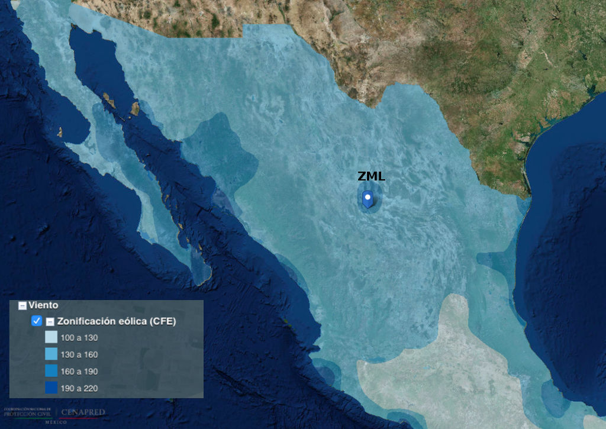
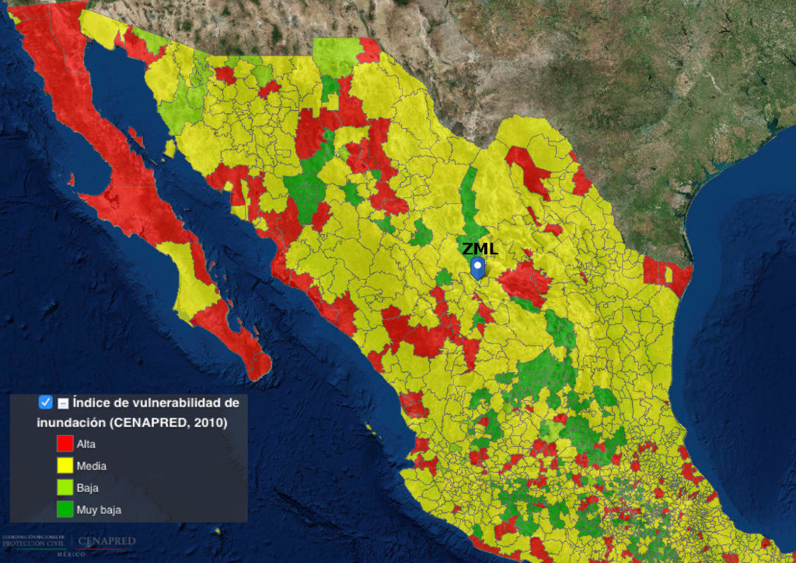

Las ciudades son los motores de desarrollo de un país como centros de intercambio económico constante. En México, ocho de cada diez personas viven en zonas urbanas, siendo los asentamientos humanos el hábitat por excelencia. Sin embargo, el crecimiento acelerado, la demanda de suelo y la alteración del medio físico, son factores que están relacionados con el cambio climático y los desastres naturales.
La SHCP (Secretaría de Hacienda y Crédito Público) expuso a través de sus informes semanales que los huracanes, los terremotos y las inundaciones causan el 93% de las pérdidas económicas relacionadas con desastres naturales cada año. Además, señaló que los desastres naturales se han vuelto más recurrentes debido al cambio climático, y tan sólo en 2014, las aseguradoras en México pagaron 16 mil 700 millones de pesos por las afectaciones que han dejado. En consecuencia, la planeación es una herramienta vital para poder responder ante las emergencias naturales y las provocadas por el hombre.
En 2005, los Estados miembros de las Naciones Unidas aprobaron el marco de acción de Hyogo, el cual ha servido como guía para las políticas nacionales y las organizaciones internacionales en los esfuerzos por reducir significativamente las pérdidas causadas por los desastres, en términos de vidas, bienes sociales, económicos y ambientales en las comunidades y en los países para desarrollar naciones y comunidades resilientes.
Una ciudad resiliente no solo es capaz de mitigar los daños por los efectos ante las múltiples amenazas a las que está expuesta, también es capaz de reaccionar ante la crisis y los riesgos, además de salir fortalecida ante la respuesta de sus habitantes para restaurar rápidamente las actividades sociales, institucionales y económicas después de una contingencia.
¿Cómo llegar a ser una ciudad resiliente? El contexto local y urbano de cada urbe es diferente, las amenazas que prevalecen dependen de la ubicación geográfica y de la urbanización que se ha desarrollado. Cuando se identifica el grado de vulnerabilidad ante las posibles crisis o amenazas y se actúa en conjunto con la sociedad para llevar a cabo acciones y propuestas de mejora, es entonces, cuando la ciudad comienza a ser resiliente.
La resiliencia urbana es un proceso continuo que requiere constante revisión, actualización y evaluación ante las vulnerabilidades a las que está expuesta la ciudad.
Desde el punto de vista económico, por cada dólar invertido en la reducción de desastres, se calcula que se ahorran entre cinco y diez dólares en pérdidas económicas (Eric Schwartz, The Boston Globe). La gestión de riesgos es una inversión que protege la vida de las personas, las propiedades, los negocios y los empleos. Además de obtener mayores incentivos que contribuyen de manera visible en la mejora social y económica de la ciudad.
El riesgo de no llevar a cabo políticas públicas para la reducción de desastres puede provocar daños económicos y sociales, entre los más comunes pueden ser la pérdida de confianza de la población y de los inversionistas. La afectación a los servicios básicos, a la infraestructura y al transporte son factores que evitan la inversión privada.
El IMPLAN Torreón en el Plan Estratégico para Torreón con enfoque Metropolitano TRC 2040, ha identificado como retos de la ciudad: la prevención ante posibles contingencias derivadas del cambio climático, falta de planeación a largo plazo, falta de gestión de riesgos. El Plan de Resiliencia Urbana es un proyecto prioritario dentro del eje de entorno urbano de Plan Estratégico para Torreón y que puede dar solución a los retos ya mencionados.
Actualmente, el Reglamento de Desarrollo Urbano, Zonificación, Uso de Suelo y Construcción incluye un capítulo completo de medidas de prevención de siniestros y riesgos a los que está expuesta la ciudad, los cuales pueden ser: geológicos, hidro-meteorológicos y químico-tecnológicos.
Para la Zona Metropolitana de la Laguna y en específico Torreón se han identificado algunos tipos de riesgos o amenazas a los que debemos estar preparados para ser resilientes. El Atlas Nacional de Riesgos a cargo de CENAPRED (Centro Nacional de Prevención de Desastres) en el índice de vulnerabilidad de inundación califica a Torreón como zona de vulnerabilidad media (en una escala de vulnerabilidad muy baja, baja, media y muy alta). Otra amenaza hidro-meteorológica a la que estamos expuestos es la eólica, según la zonificación eólica nacional desarrollada por CFE (Comisión Federal de Electricidad), La Laguna se encuentra ubicada en una zona de riesgo alto, donde las velocidades del viento pueden alcanzar de 160 a 190 Km/h.
El Plan de Resiliencia Urbana nos ayudará tomar acciones eficaces para estar preparados ante los riesgos y amenazas locales, ya sean por causas naturales o aquellas provocadas por el hombre y sin duda alguna traerá competitividad a la ciudad.
Zonificación Eólica del país

La Laguna se ubica en la zona de riesgo alto con velocidades de viento de 160-190 km/h.
Índice de Vulnerabilidad de inundación del país

La Laguna esta ubicada en vulnerabilidad media.